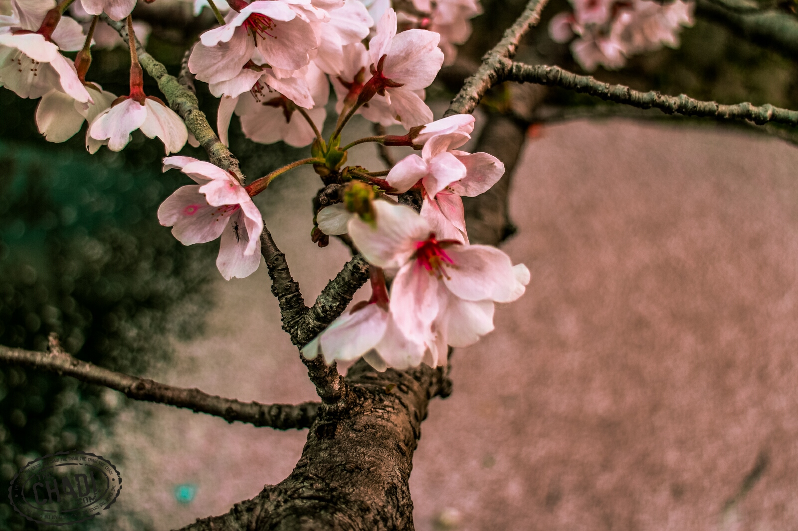
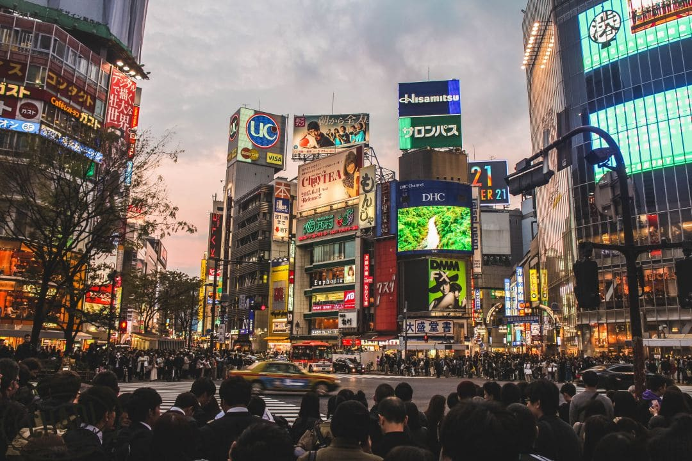
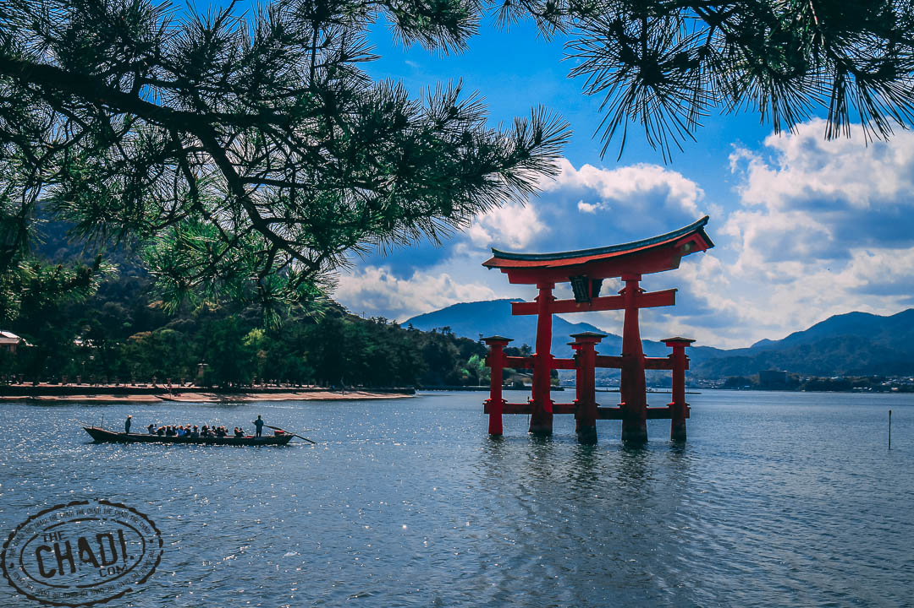
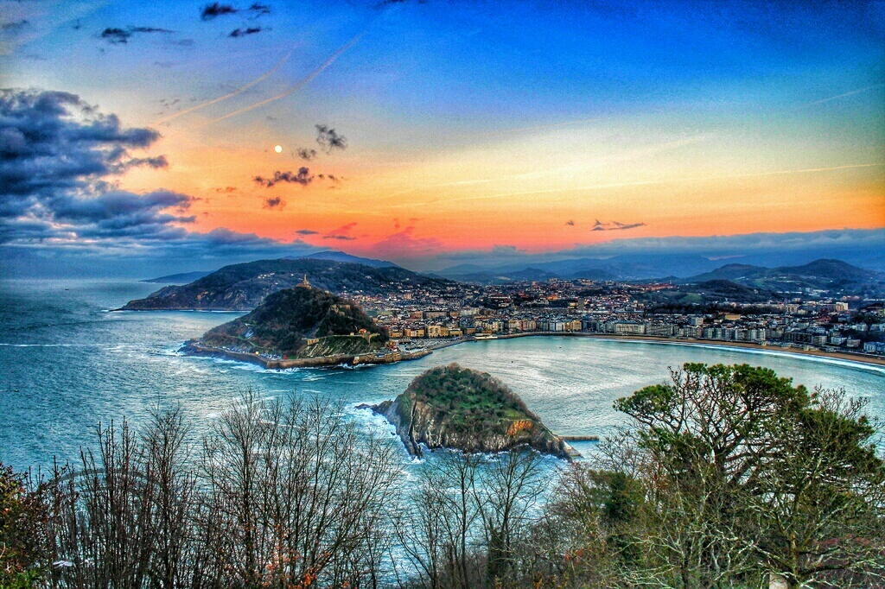
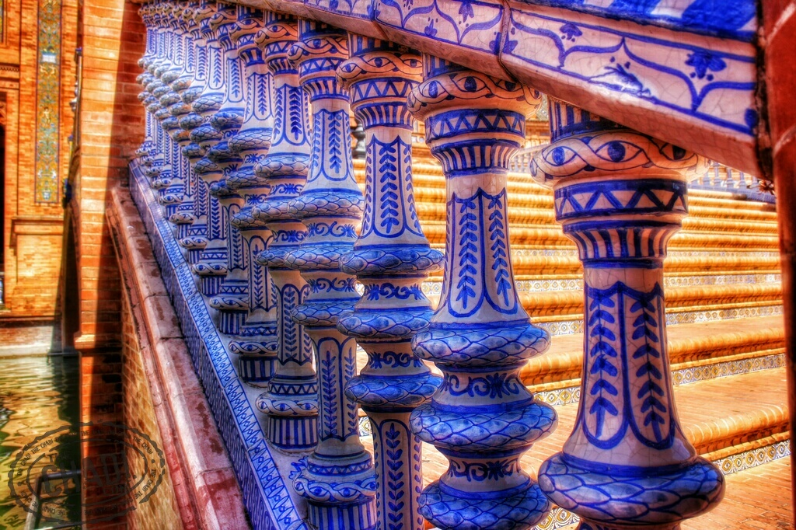
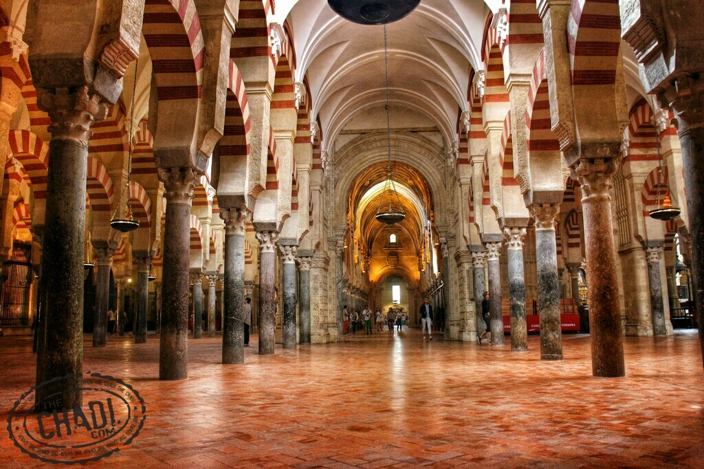

In this post, we take a look at spring in one of the most beautiful places in Japan; Kyoto. The former Imperial capital of Japan during the medieval and early modern period is rich in history and traditions. The sheer number of shrines and temples dotting the city is just astounding. It is mindboggling how can this town maintain so much charm of the past and yet hold such an important role in today’s modern Japan. Samurais and ninjas may have been a thing of the past, but in Kyoto, you can still see geishas walk down the beautiful neighbourhood of Gion.
The shots in this album were all taken during the spring, and as such, it is no surprise to be able to see the beautiful cherry blossom as it decorates the enchanting Kyoto. Sakura, or cherry blossom, may have been the most significant factor in the timing of this visit to Kyoto. Walking down the Philosopher’s path to see the beautiful colours, getting lost in Arashiyama with its beautiful bamboo forest, gazing upon the Golden Pavilion, Kinkaku-ji, and counting the thousand Toris up the Fushimi Inari-taisha shrine are but just a few of the things you will see in here. I will keep it short and let the pictures speak of the beauty of Kyoto.


In this post, we take a look at spring in the capital city of Japan; Tokyo. The greater Tokyo area is the most populous metropolitan area. Tokyo serves as the seat of both the Emperor and the government of Japan. The architecture of Tokyo speaks volumes of two contradictory worlds. It is a dream for the most futuristic enthusiast while remaining deeply rooted in its history. It is indeed quite difficult to get to know every corner of this huge city, but it surely is an indulgent experience.
The shots in this album were all taken during the spring, and as such, it is no surprise to be able to see the beautiful cherry blossom as it decorates the streets of Tokyo. I can go on for hours talking about Tokyo which was the main reason for many subsequent visits, but I will keep it short and let you enjoy a few of the selected images below.

Miyajima or Itsukushima is a beautiful island in the Hiroshima Bay. Miyajima’s proximity to Hiroshima makes it the ideal day trip destination. This must be a mandatory stop when visiting Japan even if just for one time. The peacefulness, beauty and serenity that this island has is second to none. Welcomed by the floating torii gate and the relaxing deer upon arrival is but a prelude to what’s to come next. The town itself isn’t too big and has some wonderful food options. Don’t miss out on the oysters and conger eels.
There are a few ways to explore the island and you’ll find that three hiking trails to be the easiest way to do so. For those adventurous souls, they may like to try the Momijidani and Omoto trails to wander off through the vast forest. For an easier viewing of the Seto Sea, one might just want to stick to hike the Daisho-in trail with its easy and flat incline. All three trails lead up to the highest peak of the island; Mount Misen. Alternatively, you may always stick with the Miyajima Ropeway (Hatsukaichi) if you are not a fan of hiking.
The star attraction on Miyajima is, of course, the Itsukushima Shrine which is a UNESCO site and considered one of the most beautiful locations in Japan. While you’ll find everything you might expect of a beautiful shrine, the walk to the gate is one that you might want to take if you can. The true magic of this location happens around sunset as the tide starts to rise. The torii gate will then appear as if it’s floating on water and that is a scene not to be missed. This probably is the culmination of both peacefulness and beauty of this island.

Astonishing as the landscape and cuisine are in San Sebastián, or Donostia, the hospitality of the people is what strikes the visitors the most. A small sized city with a beautiful bay and heavenly cuisine that can be savoured with every bite anywhere in the city. While San Sebastián is renowned worldwide for having the highest density of Michelin starred restaurants than anywhere else in the world, this does not take away from the quality and taste of the other excellent restaurants and bars spread across the city. A pintxo crawl across the old part of town will take one through more bars than in the whole of Norway combined!

Seville, or Sevilla, is one of the few cities on earth to have both looks and personality. Most other cities would only have one or the other. A city founded over 3000 years ago by Hercules himself. Basking in never-ending sunlight, Seville’s beauty is relatively easy to uncover but not its soul. The city is divided by a slow Guadalquivir River that makes it into Sevilla and Triana. Flamenco’s history is partially rooted here in the dusty taverns of Triana. One can’t deny the link between Seville and the most delicious tapas that we have all around the world today. The city is dotted with architectural marvels and beautiful parks. A visit there will keep you busy for a good few days.

Córdoba is, without a doubt, the star attraction of Andalusia. The pretty Moorish patios and glorious mosque alone makes it lay claim over that title. It was conquered by invading Islamic armies in the eighth century. Then it became the capital of the Islamic Emirate and then Caliphate of Córdoba, including most of the Iberian Peninsula. The name itself derives from Kartuba, Phoenician for “rich and precious city.”
It has been estimated that in the 10th century Córdoba was the most populous city in the world, and under the rule of Caliph Al Hakam II it had also become a centre for education under its Islamic rulers. This has meant the city was enjoying a golden age as the western capital of the Islamic empire. Al Hakam II opened many libraries in addition to the many medical schools and universities which existed at this time. During these centuries Córdoba became a predominantly Muslim society.
Córdoba’s most impressive Moorish monument is the Mezquita. Alcázar de los Reyes Cristianos and the Jewish quarter (Juderia) add a lot more flavour to this wonderful city and its rich history. A stroll down the historic centre can give visitors a glimpse of a city that once was the envy of many across the world.

There are some places in this world that stay with us no matter how far and how long we travel. One of those unique places is the Gulf of Naples (Golfo di Napoli). Not sure if it’s the food, the weather, the scenery, the people or just a unique mix of all. In this album we revisit Napoli and a few of its surroundings just because I missed the scenery. The views of Mount Vesuvius and Napoli from Anacapri and Castel Sant’Elmo are simply unrivaled. The natural beauty of this area makes it one of the most important for the Italian tourism industry. The Amalfi Coast, Mount Vesuvius and Capri island are some of the most impressive and highly important must see areas.